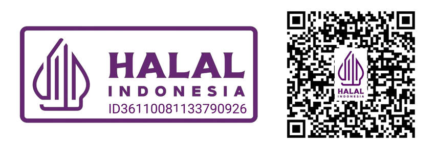
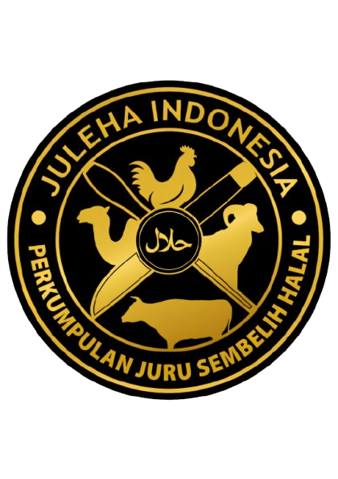
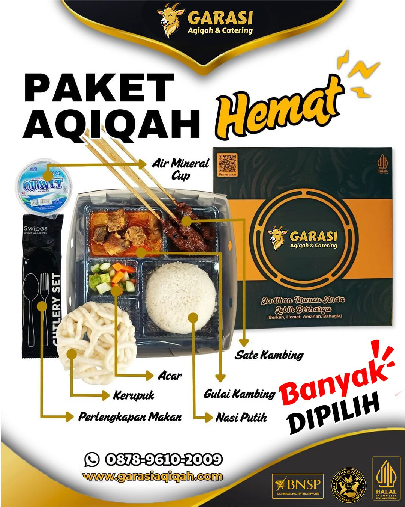
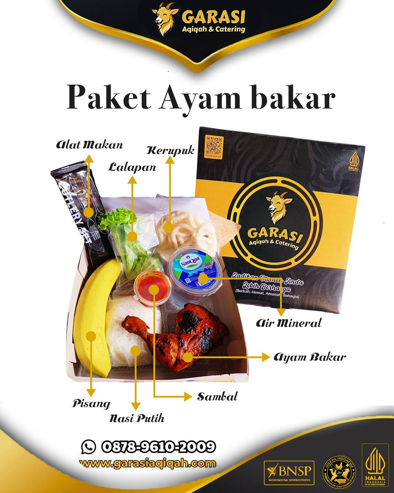
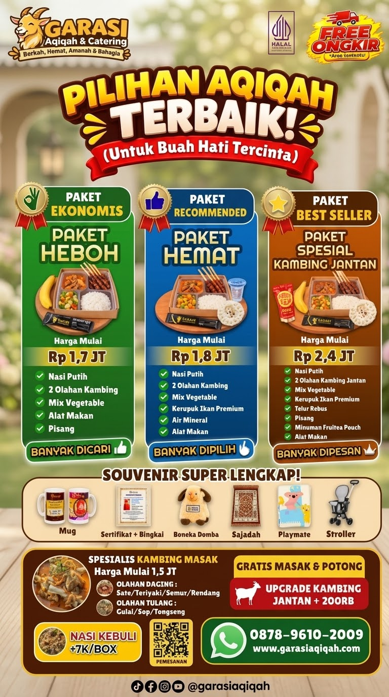

Berpengalaman Lebih dari 15 Tahun
Menangani kebutuhan aqiqah dan catering keluarga dengan alur pemesanan yang rapi dan terpercaya.
“Setiap bayi tergadai dengan aqiqahnya, disembelihkan untuknya pada hari ketujuh, dicukur dan diberi nama.”
HR Abu Dawud 2838 · At-Tirmidzi 1552
Welcome To
Jadikan Moment Anda Lebih Berharga
Kelahiran buah hati adalah anugerah terindah yang layak disambut dengan penuh syukur dan keberkahan. Di Garasi Aqiqah, kami membantu Ayah & Bunda menunaikan ibadah aqiqah dengan proses yang amanah sesuai syariat, masakan lezat yang siap santap, serta pilihan paket bernilai tinggi tanpa mengurangi kualitas.
Kami mengurus detailnya dengan sepenuh hati agar Ayah & Bunda bisa fokus menikmati momen bahagia bersama keluarga dan berbagi kebahagiaan kepada sesama.
Berkah dalam ibadah, hangat dalam kebersamaan.
Dapur Berpengalaman lebih dari 15 tahun
Lihat Katalog WhatsApp Business

Profil Usaha
Garasi Aqiqah & Catering
Garasi Aqiqah & Catering adalah layanan aqiqah, catering, dan nasi box terpercaya dengan pengalaman lebih dari 15 tahun dalam membantu keluarga mewujudkan ibadah aqiqah serta kebutuhan konsumsi acara secara praktis dan menenangkan. Kami berkomitmen menghadirkan hidangan bercita rasa lezat dengan pelayanan yang amanah, transparan, dan penuh keberkahan.
Sebagai bentuk komitmen terhadap kualitas dan syariat, layanan kami didukung oleh sertifikasi Halal Indonesia serta standar kompetensi BNSP dan Juleha Indonesia.
Setiap proses penyembelihan hingga pengolahan makanan dikerjakan dengan penuh kehati-hatian agar setiap momen istimewa keluarga, mulai dari syukuran kelahiran buah hati hingga acara keluarga dan perusahaan, terasa lebih berharga.
Konsultasi Aqiqah“Dari Samurah bin Jundab dia berkata: Rasulullah bersabda: Setiap bayi tergadai dengan aqiqahnya, disembelihkan (kambing) untuknya pada hari ke tujuh, dicukur dan diberi nama.”
(HR Abu Dawud 2838, At-Tirmidzi 1552)



Menangani kebutuhan aqiqah dan catering keluarga dengan alur pemesanan yang rapi dan terpercaya.
Didukung sertifikasi Halal Indonesia, BNSP, dan Juleha Indonesia untuk menjaga ketenangan ibadah dan kualitas sajian.
Layanan gratis masak dan potong, serta free ongkir untuk area tertentu seperti Tangerang, Jakarta Barat, dan sekitarnya.
Tersedia berbagai pilihan paket aqiqah, kambing masak, nasi kebuli, hingga catering harian, prasmanan, dan nasi box untuk berbagai acara.
Dilengkapi pilihan souvenir menarik sebagai kenang-kenangan momen aqiqah yang berkesan.
Dirancang praktis dan siap saji untuk dibagikan kepada keluarga, kerabat, maupun tetangga.
Cocok bagi Anda yang ingin mengolah sendiri sajian atau menyesuaikan menu keluarga, dengan fasilitas gratis masak & potong.
Olahan daging:
Olahan tulang:
Lengkapi momen syukuran buah hati dengan beragam pilihan souvenir.
Selain aqiqah, kami juga melayani catering harian, prasmanan, dan nasi box dengan menu bervariasi dan lezat, seperti Nasi Liwet, Nasi Kebuli, Ayam Bakar, Nila Goreng, Rendang Sapi, dan Sop Iga Sapi, dengan menu catering yang sudah bersertifikasi halal.
Nilai Kami
Empat nilai yang menjadi dasar setiap layanan kami.
Ibadah sunnah untuk si kecil dan bentuk syukur keluarga.
Berbagai pilihan paket yang bisa disesuaikan dengan kebutuhan.
Dapur berpengalaman lebih dari 15 tahun.
Momen keluarga yang lebih berharga untuk dikenang bersama.
Mau ibadah Aqiqah tanpa ribet dan tetap hemat di kantong? Garasi Aqiqah & Catering siap membantu menyempurnakan momen istimewa si kecil!
Kenapa Ayah & Bunda harus pilih Garasi Aqiqah?
Yuk, percayakan aqiqah buah hati Anda pada ahlinya! Hubungi kami sekarang untuk informasi & pemesanan
Tanya Harga Kambing
Momen aqiqah si kecil makin berkesan dan tanpa ribet bareng Garasi Aqiqah & Catering! Pilih PAKET HEMAT — Paling Recomended (Banyak Dipilih) :
ISI NASI BOX :
BANYAK BONUS GRATISNYA :
PROMO SPESIAL UPGRADE KAMBING JANTAN :
Cuma tambah +200rb aja, langsung dapet tambahan FREE SAJADAH JUMBO atau PLAYMATES/MATRAS (Uk. 180 Merk Goto Living)! (Bisa pilih salah satu) Isi
Tanya Paket Hemat
Ingin momen ibadah aqiqah buah hati terasa makin sempurna dan istimewa? Pilih PAKET SPESIAL dari Garasi Aqiqah & Catering! Paket paling best seller dengan pilihan Kambing Jantan dan isian box paling komplit!
Isi Box Spesial Ekstra Lengkap:
MELIMPAH BONUS & SOUVENIR GRATIS:

Paket aqiqah yang Best Price dan Banyak Dicari, lezat, dan ramah di kantong? Paket Aqiqah Heboh dari Garasi Aqiqah & Catering solusinya!
ISI NASI BOX :
BONUS MELIMPAH (GRATIS!):
SPECIAL PROMO:
Upgrade ke Kambing Jantan cuma +200rb, Free Boneka Domba
Tanya Paket Heboh
Pilihan Paket
Pilih paket yang sesuai, lalu chat kami untuk detail dan pemesanan.





Isi paket dan harga mengikuti poster asli. Hubungi kami untuk informasi terbaru.
Mengapa Garasi Aqiqah
Garasi Aqiqah memberikan gratis ongkir. Sehingga ayah bunda lebih hemat dalam memilih paket aqiqah untuk buah hati.
Garasi Aqiqah menberikan banyak bonus setiap kali pesanannya, sesuai dengan kebutuhan ayah bunda menyambut buah hati.
Garasi Aqiqah memberikan harga yang kompetitif, tetapi tetap berkualitas. Dengan pilihan paket yang sesuai kantong dan bervariasi.
Garasi Aqiqah berkotmitmen untuk mengantarkan pesanan ayah bunda tepat waktu, sesuai dengan jadwal yang telah disepakati.
Garasi Aqiqah memberikan jaminan garansi, jika pesanan ayah bunda tidak di kirim, makanan basi, atau keterlambatan.
Galeri
Foto-foto produk dan dokumentasi yang tersedia.


.jpeg)
.jpeg)


.jpeg)

.jpeg)


.jpeg)
.jpeg)

.jpeg)
.jpeg)

.jpeg)
.jpeg)

.jpeg)
.jpeg)

.jpeg)
.jpeg)
.jpeg)
5 / 9

Ulasan Pelanggan
Ulasan pelanggan Garasi Aqiqah & Catering yang dibagikan di Google Maps.
4 minggu lalu

Saya cari aqiqah ini di google karena mau cari yg deket rumah. Alhamdulillah ketemu garasi aqiqah, saya chat fast respon dan harganya saya bandingin dengan kompetitor lebih murah (saya beli 100box 2 ekor) + sudah ada halal dan BNSP jadi lebih percaya saya, walaupun saya gatau tempatnya dimana jadi saya langsung dp, pas sampai langsung diantar oleh ownernya yang ramah, cepat dan masakannya 100% enak, empuk dan gak bau kambing/domba (jago yg motong) dan juga potongan dagingnya gede gede, anak sebelumnya aqiqah jg 100box ditempat lain potongannya kecil kecil. Semoga sukses selalu usahanya pak
Lihat ulasan di Google Mapssebulan lalu

Ga usah ragu pakai jasanya aman terpercaya adminnya juga sabar biar pun saya banyak tanya 🙏🏻😂 + untuk makanan nya enak ko terimakasih garasi aqiqah …
Lihat ulasan di Google Maps3 bulan lalu

Alhamdulillah kemarin tggl 9 agustus acara aqiqah anak , pesen si garasi aqiqah bnr” amanah , pesenannya juga di anter lebih cepat , pelayanannya juga ramah , ddan yg terpenting masakkan nya alhamdulillah enak” ga bau perengus kambing nya 😁 …
Lihat ulasan di Google Maps2 bulan lalu

Pelayanan nya ramah, harga terjangkau, enak juga rasanya, worth it, dan yang pasti bakal jadi langanan, the best deh garasi catering & aqiqah
Lihat ulasan di Google Maps4 minggu lalu

Masyaallah alhamdulillah semua berjalan dengan lancar.. sangat amanah aqiqah disini , sangat puas pelayanan sangat ramah, terimakasih garasi aqiqah semoga makin lancar usahanya🙏🏻 …
Lihat ulasan di Google Maps3 / 5
Silakan hubungi WhatsApp kami di 6287896102009 untuk konsultasi dan pemesanan.
Ya. Sertifikat halal tercantum dengan nomor ID36110081133790926 dan dapat dilihat pada bagian Tentang Kami serta Galeri.
Gg. Dukuh 2 No.38, RT.002/RW.002, Neroktog, Kec. Pinang, Kota Tangerang, Banten. Plus Code: QMWQ+XR Neroktog, Kota Tangerang, Banten.
Katalog tersedia di WhatsApp Business Garasi Aqiqah.
Tentu. Gunakan tombol konsultasi di halaman ini untuk mengirim pesan otomatis ke WhatsApp kami.
Kami siap melayani Ayah Bunda pesan 1 hari sebelum acara, namun pemesanan lebih lama dari hari H akan lebih baik. Karena melihat ketersediaan stok kambing.
Sangat bisa. kami siap membantu anda untuk mengirimkan masakan ke yayasan atau panti asuhan yang Ayah Bunda inginkan.
Konsultasi Aqiqah
Ceritakan rencana dan kebutuhan Anda. Kami siap membantu melalui WhatsApp.
Kontak Kami
Gg. Dukuh 2 No.38, RT.002/RW.002, Neroktog, Kec. Pinang, Kota Tangerang, Banten.
Area pengiriman hanya melayani wilayah Tangerang dan Jakarta.
Konsultasikan rencana aqiqah Anda dan dapatkan detail promonya via WhatsApp.
Tekan Escape atau tombol Tutup untuk menutup tampilan gambar.
